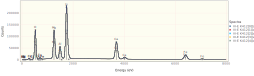
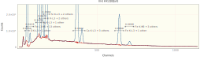
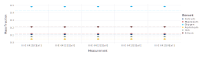
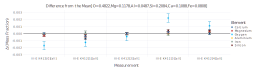

Quantifying K412 using NeXLSpectrum and NeXLMatrixCorrection
This document demonstrates the high-level API for filter fitting spectra. This API is less flexible than the low-level API discussed here.
Libraries
Use the NeXLSpectrum to load, plot, fit and report the quantification of a set of K412 spectra.
Loading NeXLSpectrum also automatically makes NeXLCore and NeXLUncertainties available.
Loading the Gadfly library adds plotting support to NeXLSpectrum.
using NeXLSpectrum # Provides spectrum reading and fitting tools
using NeXLMatrixCorrection # Provides `quant` to convert k-ratios to mass fraction.
using Gadfly # Plotting
using DataFrames, Latexify # TablesThe reference and references functions
Use the reference and references functions to build the filtered references.
# Where to find the files relative to this script file.
path = joinpath(@__DIR__, "K412 spectra")
refs = references(
[
# Specify a reference for iron (arg 1), in "Fe std.msa" (arg2) that is pure iron (arg3).
reference(n"Fe", joinpath(path, "Fe std.msa"), mat"Fe"),
# specify a conductive surface coating layer using the `coating` named argument
reference(n"Si", joinpath(path, "SiO2 std.msa"), mat"SiO2", coating = Film(pure(n"C"), 10.0e-7)),
reference(n"O", joinpath(path, "SiO2 std.msa"), mat"SiO2", coating = Film(pure(n"C"), 10.0e-7)),
reference(n"Ca", joinpath(path, "CaF2 std.msa"), mat"CaF2", coating = Film(pure(n"C"), 10.0e-7)),
# Read the composition from the spectrum file's ##D2STDCMP tag
reference(n"Mg", joinpath(path, "MgO std.msa"), coating = Film(pure(n"C"), 10.0e-7)),
# Read the conductive coating from the spectrum file's ##CONDCOATING tag
reference(n"Al", joinpath(path, "Al2O3 std.msa"), mat"Al2O3"),
],
132.0 # Detector resolution at Mn Kα (eV)
)References[
BasicEDS[4096 chs, 1.63032 + 9.99856⋅ch eV, 132.0 eV @ Mn K-L3, 1 ch LLD,
[Be,Sc,Ba,Pu]],
k[Fe L3-M5 + 13 others, Fe],
k[Fe K-L3 + 1 other, Fe],
k[Fe K-M3 + 3 others, Fe],
k[Si K-L3 + 2 others, SiO2],
k[O K-L3 + 1 other, SiO2],
k[Ca K-L3 + 3 others, CaF2],
k[Mg K-L3 + 1 other, MgO],
k[Al K-L3 + 2 others, Al2O3],
]Load the Unknowns
# Now load all the unknown spectra and assign a carbon coating`
unks = map(0:4) do i
s = loadspectrum(joinpath(path, "III-E K412[$i][4].msa"))
# assign a carbon coating
s[:Coating] = Film(pure(n"C"), 30.0e-7)
s
end5-element Vector{Spectrum{Float64}}:
Spectrum{Float64}[III-E K412[0][all], 1.63032 + 9.99856⋅ch eV, 4096 ch, 20
.0 keV, K412, 8.08e6 counts]
Spectrum{Float64}[III-E K412[1][all], 1.63032 + 9.99856⋅ch eV, 4096 ch, 20
.0 keV, K412, 8.08e6 counts]
Spectrum{Float64}[III-E K412[2][all], 1.63032 + 9.99856⋅ch eV, 4096 ch, 20
.0 keV, K412, 8.08e6 counts]
Spectrum{Float64}[III-E K412[3][all], 1.63032 + 9.99856⋅ch eV, 4096 ch, 20
.0 keV, K412, 8.09e6 counts]
Spectrum{Float64}[III-E K412[4][all], 1.63032 + 9.99856⋅ch eV, 4096 ch, 20
.0 keV, K412, 8.08e6 counts]Table: The spectra
| Name | BeamEnergy | ProbeCurrent | LiveTime | RealTime | Coating | Integral | Material |
|---|---|---|---|---|---|---|---|
| III-E K412[0][all] | 2e+04 | 1.114 | 235.5 | 286.3 | 30.0 nm of Pure C | 8.08e+06 | K412 |
| III-E K412[1][all] | 2e+04 | 1.114 | 235.4 | 286.2 | 30.0 nm of Pure C | 8.077e+06 | K412 |
| III-E K412[2][all] | 2e+04 | 1.112 | 235.5 | 286.3 | 30.0 nm of Pure C | 8.084e+06 | K412 |
| III-E K412[3][all] | 2e+04 | 1.11 | 235.4 | 286.3 | 30.0 nm of Pure C | 8.087e+06 | K412 |
| III-E K412[4][all] | 2e+04 | 1.11 | 235.4 | 286.2 | 30.0 nm of Pure C | 8.081e+06 | K412 |
| Fe std | 2e+04 | 1.11 | 1171 | 1529 | nothing | 5.445e+07 | Fe |
| Fe std | 2e+04 | 1.11 | 1171 | 1529 | nothing | 5.445e+07 | Fe |
| Fe std | 2e+04 | 1.11 | 1171 | 1529 | nothing | 5.445e+07 | Fe |
| SiO2 std | 2e+04 | 1.11 | 1173 | 1470 | 10.0 nm of Pure C | 4.665e+07 | SiO2 |
| SiO2 std | 2e+04 | 1.11 | 1173 | 1470 | 10.0 nm of Pure C | 4.665e+07 | SiO2 |
| CaF2 std | 2e+04 | 1.11 | 1176 | 1456 | 10.0 nm of Pure C | 4.406e+07 | CaF2 |
| MgO std | 2e+04 | 1.106 | 1176 | 1496 | 10.0 nm of Pure C | 4.985e+07 | MgO |
| Al2O3 std | 2e+04 | 1.11 | 1172 | 1491 | 10.0 nm of Pure Carbon | 4.974e+07 | Al2O3 |
Notice that the spectra all have 1) live-time (:LiveTime); 2) probe-current (:ProbeCurrent); 3) take-off angle (:TakeOffAngle); 4) beam energy (:BeamEnergy); and detector (:Detector) properties defined. These properties are necessary for extracting the k-ratios and estimating the composition.
u=unks[1]
u[:LiveTime], u[:ProbeCurrent], u[:TakeOffAngle], u[:BeamEnergy], u[:Coating](235.48403, 1.11355, 0.6108652381980153, 20000.0, 30.0 nm of Pure C)The Unknowns
display(plot(unks..., klms=[n"O",n"Mg",n"Al",n"Si",n"Ca",n"Fe"], xmax=8.0e3))
The Reference Spectra
Plot the reference spectra...
plot(spectra(refs)..., klms=collect(elms(refs)), xmax=8.0e3)
Fit the Pre-Filtered References to the Unknowns
res= [ fit_spectrum(u,refs) for u in unks ]5-element Vector{FilterFitResult}:
III-E K412[0][all]
III-E K412[1][all]
III-E K412[2][all]
III-E K412[3][all]
III-E K412[4][all]| Spectra | k[O K-L3 + 1 other, SiO2] | k[Fe L3-M5 + 13 others, Fe] | k[Mg K-L3 + 1 other, MgO] | k[Al K-L3 + 2 others, Al2O3] | k[Si K-L3 + 2 others, SiO2] | k[Ca K-L3 + 3 others, CaF2] | k[Fe K-L3 + 1 other, Fe] | k[Fe K-M3 + 3 others, Fe] |
|---|---|---|---|---|---|---|---|---|
| III-E K412[0][all] | 0.6556 | 0.04191 | 0.1476 | 0.06698 | 0.3508 | 0.1922 | 0.06683 | 0.06684 |
| III-E K412[1][all] | 0.6574 | 0.04157 | 0.1475 | 0.06674 | 0.35 | 0.1916 | 0.06708 | 0.06738 |
| III-E K412[2][all] | 0.658 | 0.04192 | 0.1479 | 0.06708 | 0.3513 | 0.1922 | 0.06688 | 0.06704 |
| III-E K412[3][all] | 0.6624 | 0.04146 | 0.1481 | 0.06715 | 0.352 | 0.1925 | 0.06682 | 0.0678 |
| III-E K412[4][all] | 0.6608 | 0.04082 | 0.1482 | 0.06728 | 0.3519 | 0.1922 | 0.06694 | 0.06648 |
Let's take a look at a residual spectrum by plotting one of the FilterFitResult objects.
plot(res[1])
Quantify the k-ratios by Matrix Correction
quant = quantify.(res)5-element Vector{IterationResult}:
Converged to III-E K412[0][all][Al=0.0487,Ca=0.1089,Fe=0.0807,Mg=0.1176,Si
=0.2083,O=0.4815] in 9 steps.
Converged to III-E K412[1][all][Al=0.0485,Ca=0.1085,Fe=0.0810,Mg=0.1176,Si
=0.2078,O=0.4820] in 8 steps.
Converged to III-E K412[2][all][Al=0.0487,Ca=0.1089,Fe=0.0807,Mg=0.1179,Si
=0.2086,O=0.4828] in 10 steps.
Converged to III-E K412[3][all][Al=0.0488,Ca=0.1090,Fe=0.0807,Mg=0.1181,Si
=0.2090,O=0.4855] in 8 steps.
Converged to III-E K412[4][all][Al=0.0489,Ca=0.1089,Fe=0.0808,Mg=0.1181,Si
=0.2090,O=0.4843] in 8 steps.| Material | O | Mg | Al | Si | Ca | Fe | Total |
|---|---|---|---|---|---|---|---|
| III-E K412[0][all] | 0.4815 | 0.1176 | 0.04866 | 0.2083 | 0.1089 | 0.08065 | 1.046 |
| III-E K412[1][all] | 0.482 | 0.1176 | 0.04851 | 0.2078 | 0.1085 | 0.08095 | 1.045 |
| III-E K412[2][all] | 0.4828 | 0.1179 | 0.04874 | 0.2086 | 0.1089 | 0.08072 | 1.048 |
| III-E K412[3][all] | 0.4855 | 0.1181 | 0.04878 | 0.209 | 0.109 | 0.08066 | 1.051 |
| III-E K412[4][all] | 0.4843 | 0.1181 | 0.04888 | 0.209 | 0.1089 | 0.0808 | 1.05 |
Finally plot the results as mass fractions.
plot(quant, known=unks[1][:Composition])
Plot the difference from the SRM value.
plot(quant, known=unks[1][:Composition], delta=true)
Plot the difference from the mean value for each element.
plot(quant, delta=true)